Network Automation ด้วย Netmiko
บน Real IOS แบบ Multi-Branch
สารบัญ
ความสอดคล้องกับเกณฑ์การประเมิน
| หมวด (คะแนน) | หลักฐานในงานนี้ | อยู่ที่ |
|---|---|---|
| Topology Design & Addressing (20) | Hub-and-Spoke HQ/Branch/DC, OOB management, Dual-Stack ตามแผนเลขที่อธิบายเหตุผลได้, ตารางพอร์ตครบทุกอุปกรณ์ | A2, B2 |
| Real IOS Configuration & Verification (25) | Config สร้างจาก template ตัวเดียว push ผ่าน Netmiko และ verify อัตโนมัติ 19 รายการต่อ router ทั้ง Control, Data และ Management plane | A3, B3 |
| Fault Injection & Troubleshooting (20) | 4 scenario ที่ inject ได้ซ้ำ เก็บ timeline, syslog และ debug อัตโนมัติ มี RCA แบบ 5-Whys และกู้คืนได้ 2 วิธี (targeted fix / configure replace) | A3 Phase 9, B4 |
| Comparative Analysis & Trade-off (15) | Weighted Trade-off Matrix 4 ชุด: Automation tool, VPN overlay, IGP, Emulation platform | B5 |
| Live Demo & Technical Q&A (20) | สคริปต์เดโมแบ่งตามนาที มีแผนสำรอง และเตรียมคำตอบ Q&A 12 ข้อ | A5, ภาคผนวก ก |
Demo Runbook
คู่มือรันคำสั่งตั้งแต่เตรียมเครื่องจนจบการเดโม ทุกขั้นมี Checkpoint ให้ตรวจก่อนไปขั้นถัดไป
A1 ภาพรวมและสิ่งที่ต้องเตรียม
ใบงาน 28.1.3 ต้นฉบับใช้ Netmiko ต่อเข้า CSR1000v ตัวเดียวใน DEVASC VM ผ่าน SSH ส่ง show แล้วสร้าง Loopback ด้วย send_config_set() โปรเจคนี้ใช้หลักการเดียวกันแต่ขยายเป็น pipeline ครบวงจร:
inventory.yaml ──► Jinja2 templates ──► deploy.py (backup → push → save → diff)
(source of truth) │
▼
evidence/*.md ◄── verify.py (19 checks/router) ◄── fault.py (inject → diagnose → recover)
แพลตฟอร์มที่เลือก: Cisco DevNet Sandbox – Cisco Modeling Labs
เครื่องผู้จัดทำเป็น MacBook ชิป Apple Silicon ซึ่งรัน image x86 อย่าง IOSv/IOL ได้ไม่ดี จึงให้ Emulator รันบน cloud คือ CML ของ DevNet Sandbox ซึ่งรัน Real IOSv บนฮาร์ดแวร์ x86 ของ Cisco ส่วน Mac ใช้แค่ VPN, เบราว์เซอร์ และ Wireshark ทั้งนี้อาจารย์อนุญาตให้ส่งไฟล์ topology เป็น .yaml ของ CML แทน .gns3project/.unl แล้ว
| องค์ประกอบใน Sandbox | ที่อยู่ | ใช้ทำอะไร |
|---|---|---|
| CML controller | 10.10.20.161* | Web UI / REST API (cml_lab.py) / Console server (ใช้กู้คืนแบบ out-of-band) |
| devbox (Linux) | 10.10.20.50 | Automation host: รัน Netmiko, Syslog/NetFlow collector |
External Connector bridge0 | 10.10.20.0/24 | เชื่อม Gi0/3 ของ router เข้าวง sandbox โดย router ใช้ .181–.184 (หลบ .1, .50, .161 และ .170–.178 ที่ default lab ใช้อยู่) |
| Mac ของผู้จัดทำ | VPN client | เปิด CML UI, SSH ไป devbox, เปิดไฟล์ .pcap ด้วย Wireshark |
* ให้ดู IP และ credential จริงในหน้า Instructions ของ sandbox ที่จองได้ แล้วแก้ใน inventory.yaml → defaults.cml ข้อจำกัดของ sandbox คือรับการเชื่อมต่อขาเข้าได้อย่างเดียว node ออก Internet ไม่ได้ และเวลาจองมีจำกัด จึงควรจองล่วงหน้าและต่อเวลาก่อนวันเดโม
ซอฟต์แวร์และ Image
| รายการ | เวอร์ชัน | หมายเหตุ |
|---|---|---|
Cisco IOSv (node definition iosv) | 15.9(3)M ตามที่ CML มีให้ | Real IOS kernel, ประมาณ 512 MB RAM ต่อ node |
| Cisco Modeling Labs | 2.x (ตามที่ sandbox ให้) | ดูเวอร์ชันได้จากเมนู About และติดตั้ง virl2-client ให้เลขรุ่นตรงกัน |
| Python | 3.9 ขึ้นไป | pip install -r requirements.txt (netmiko 4, ntc-templates, jinja2, pyyaml, virl2-client) |
| Wireshark | 4.x บน Mac | เปิดไฟล์ .pcap ที่ดึงจาก CML ด้วย cml_lab.py capture |
| Cisco Packet Tracer | 8.2 / 9.0 | Bare minimum: ใช้วาด topology draft (topology-draft.pkt) เท่านั้น |
A2 Topology และแผนผังแอดเดรส
| อุปกรณ์ | Interface | IPv4 | IPv6 | หน้าที่ |
|---|---|---|---|---|
| R0-ISP | Gi0/0 | 203.0.113.2/30 | 2001:db8:ffff:1::2/64 | → R1-HQ |
| Gi0/1 | 203.0.113.6/30 | 2001:db8:ffff:2::2/64 | → R2-BR1 | |
| Gi0/2 | 203.0.113.10/30 | 2001:db8:ffff:3::2/64 | → R3-DC | |
| Gi0/3 | 10.10.20.181/24 | – | OOB mgmt | |
| R1-HQ | Gi0/0 | 203.0.113.1/30 | 2001:db8:ffff:1::1/64 | WAN |
| Gi0/1 | 10.1.10.1/24 | 2001:db8:1:10::1/64 | LAN HQ | |
| Gi0/3 | 10.10.20.182/24 | – | OOB mgmt | |
| Lo0 | 10.0.0.1/32 | 2001:db8:0:1::1/128 | RID 1.1.1.1 | |
| Tunnel12 | 172.16.12.1/30 | 2001:db8:12::1/64 | → R2 (dst 203.0.113.5) | |
| Tunnel13 | 172.16.13.1/30 | 2001:db8:13::1/64 | → R3 (dst 203.0.113.9) | |
| R2-BR1 | Gi0/0 | 203.0.113.5/30 | 2001:db8:ffff:2::1/64 | WAN |
| Gi0/1 | 10.2.10.1/24 | 2001:db8:2:10::1/64 | LAN Branch | |
| Gi0/3 | 10.10.20.183/24 | – | OOB mgmt | |
| Lo0 | 10.0.0.2/32 | 2001:db8:0:2::1/128 | RID 2.2.2.2 | |
| Tunnel12 | 172.16.12.2/30 | 2001:db8:12::2/64 | → R1 (dst 203.0.113.1) | |
| R3-DC | Gi0/0 | 203.0.113.9/30 | 2001:db8:ffff:3::1/64 | WAN |
| Gi0/1 | 10.3.10.1/24 | 2001:db8:3:10::1/64 | LAN Data Center | |
| Gi0/3 | 10.10.20.184/24 | – | OOB mgmt | |
| Lo0 | 10.0.0.3/32 | 2001:db8:0:3::1/128 | RID 3.3.3.3 | |
| Tunnel13 | 172.16.13.2/30 | 2001:db8:13::2/64 | → R1 (dst 203.0.113.1) | |
| devbox | eth | 10.10.20.50/24 | – | Netmiko, Syslog, NetFlow |
การต่อสายใน CML (สร้างให้อัตโนมัติด้วย cml_lab.py build): Gi0/0 ของ R1/R2/R3 ต่อกับ Gi0/0/1/2 ของ R0, Gi0/1 ต่อกับ unmanaged switch ของแต่ละ site (ใส่ --with-pcs ถ้าต้องการ PC ไว้สร้างทราฟฟิก), Gi0/3 ทุกตัวต่อกับ SW-MGMT → EXT-MGMT (bridge0)
A3 ขั้นตอนรันทีละเฟส
Phase 0 — จอง Sandbox และต่อ VPN
- เข้า
developer.cisco.com/sandbox→ ค้นหา Cisco Modeling Labs → Reserve (ตั้งเวลาให้ครอบคลุมช่วงเดโม) - เมื่ออีเมลแจ้งว่าพร้อม ให้ต่อ VPN ตามข้อมูลในอีเมลด้วย Cisco Secure Client (AnyConnect) หรือ
openconnectบน Mac - ถ้า default lab ของ sandbox กำลังรัน และไม่ได้ใช้ ให้ Stop ทิ้งเพื่อคืนทรัพยากร
mac$ ping -c2 10.10.20.161 && ping -c2 10.10.20.50 # CML และ devbox ต้องตอบ mac$ open https://10.10.20.161 # CML UI → ดูเวอร์ชันที่เมนู About
Phase 1 — ติดตั้งโปรเจคบน devbox
mac$ scp -r "Capstone Project P3" developer@10.10.20.50:~/capstone mac$ ssh developer@10.10.20.50 $ cd ~/capstone && python3 --version # ต้อง ≥ 3.9 $ python3 -m venv .venv && source .venv/bin/activate $ pip install -r requirements.txt "virl2-client==2.8.*" # เลขรุ่นให้ตรงกับ CML $ export NET_USER=admin NET_PASS='<รหัสจริง>' NET_SECRET='<รหัสจริง>' # ไม่ต้องเปิดรหัสบนจอตอนเดโม
collector.py บน devbox (ใช้แค่ standard library) เพราะ router ส่ง syslog ไปหาเครื่อง Mac ผ่าน VPN ไม่ได้Phase 2 — Dry-run: render config โดยยังไม่แตะอุปกรณ์
$ python scripts/deploy.py --dry-run
[render] R0-ISP: 79 lines -> configs/rendered/R0-ISP.cfg
[render] R1-HQ: 214 lines -> configs/rendered/R1-HQ.cfg
...
Jinja2 ตั้ง StrictUndefined ไว้ ถ้าตัวแปรใน inventory หายไป จะ error ตั้งแต่ขั้นนี้ ไม่มี config ครึ่งๆ กลางๆ หลุดไปถึงอุปกรณ์
Phase 3 — สร้าง Lab บน CML ด้วย API (Infrastructure-as-Code)
$ python scripts/cml_lab.py build [+] node R0-ISP (iosv) mgmt 10.10.20.181 ... [+] link R0-ISP GigabitEthernet0/2 <-> R3-DC GigabitEthernet0/0 Starting lab 'Capstone-P3' — IOSv ใช้เวลา boot ประมาณ 3–6 นาที [OK] lab converged $ python scripts/cml_lab.py status $ for i in 181 182 183 184; do ping -c1 -W1 10.10.20.$i; done
สคริปต์ render bootstrap.j2 (hostname, user, Gi0/3 mgmt IP, RSA key, SSHv2) ใส่เป็น Day-0 config ของแต่ละ node จึงไม่ต้องพิมพ์ทาง console เลย
ssh admin@10.10.20.182 เข้าได้ ถ้า ping ได้แต่ SSH ไม่ได้ (ยังไม่มี RSA key) ให้รัน python scripts/cml_lab.py ssh-key ซึ่งจะสร้าง key ให้ผ่าน console serverPhase 4 — ใบงาน 28.1.3 บน Real IOS
$ python scripts/lab_28_1_3.py --device R1-HQ
Part 1: Connect to R1-HQ (10.10.20.182) via SSH → Prompt: R1-HQ#
Part 2: send_command('show ip interface brief') → ตาราง + TextFSM list of dict
Part 3: send_config_set() — create loopbacks → Loopback101/102
Part 4: Verify + save → [OK]
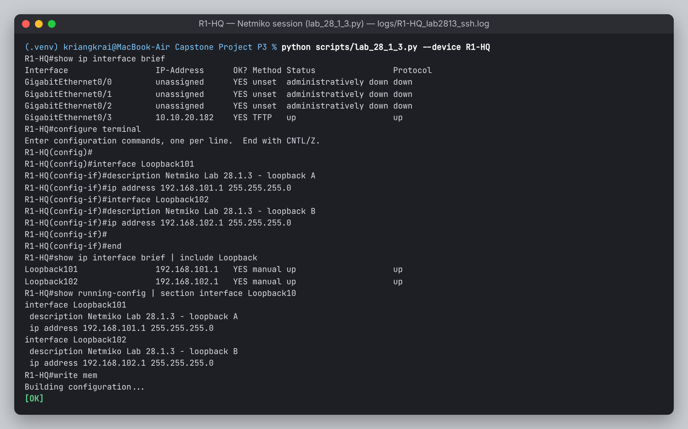
screenshots/fig-02-lab2813.pngPhase 5 — เปิด Collector (หน้าต่าง terminal ที่ 2)
$ sudo .venv/bin/python scripts/collector.py # บน devbox [*] syslog listening on udp/514 [*] netflow listening on udp/2055
Phase 6 — Deploy config เต็มชุด
$ python scripts/deploy.py
[ OK ] R0-ISP 78 changed lines
[ OK ] R1-HQ 214 changed lines
[ OK ] R2-BR1 192 changed lines
[ OK ] R3-DC 192 changed lines
ทุกเครื่องถูกสำรอง config ก่อนและหลังเปลี่ยน (configs/backups/) มีไฟล์ .diff และฉบับล่าสุดอยู่ที่ configs/running/ ซึ่งใช้เป็น deliverable “running-config ฉบับเต็ม” ได้ทันที ถ้าในผลมีบรรทัด % Invalid input สคริปต์จะขึ้น FAIL และ exit code เป็น 1
Phase 7 — Verify อัตโนมัติ + ตรวจด้วย CLI
$ python scripts/verify.py # NTP อาจต้องรอ 2–5 นาทีหลัง deploy R1-HQ OSPFv2 neighbors FULL PASS 2/2 2.2.2.2=FULL/ -, 3.3.3.3=FULL/ - R1-HQ IKE SA (QM_IDLE) PASS 2/2 R1-HQ Ping v6 -> R3-DC Lo0 PASS 100% ... สรุป: 62 checks, FAIL 0 → evidence/verify_<เวลา>.md
คำสั่ง CLI ที่ควรโชว์สดคู่กัน:
R1-HQ# show ip ospf neighbor R1-HQ# show ipv6 ospf neighbor R1-HQ# show crypto isakmp sa R1-HQ# show crypto ipsec sa | include encaps|decaps R1-HQ# show ip route ospf R1-HQ# show ipv6 route ospf R1-HQ# show policy-map control-plane R1-HQ# show flow monitor FNF-MONITOR cache R1-HQ# show ntp associations R1-HQ# show snmp user R1-HQ# show ip access-lists ACL-WAN-IN R1-HQ# debug ip ospf events (แล้ว undebug all)
Phase 8 — บันทึก Golden Config
$ python scripts/deploy.py --golden # copy running-config flash0:golden.cfg ทุกเครื่อง
Phase 9 — Fault Injection & Recovery
| คำสั่ง | ผลลัพธ์ |
|---|---|
python scripts/fault.py list | แสดง 4 scenario: mtu psk mgmt-acl flap |
python scripts/fault.py run psk | ครบวงจร (ใช้ตอนเก็บหลักฐานทำรายงาน) ได้ evidence/fault_psk_<เวลา>/timeline.md |
python scripts/fault.py inject mtu | ฉีดปัญหาอย่างเดียว ใช้ตอนเดโมเพื่อไล่แก้เองบน CLI ต่อหน้ากรรมการ |
python scripts/fault.py recover mtu | แก้แบบเจาะจงจุด (targeted fix) |
python scripts/fault.py recover psk --rollback | กู้ทั้งเครื่องด้วย configure replace flash0:golden.cfg force |
Phase 10 — รวบรวมสิ่งส่งมอบ
$ python scripts/cml_lab.py export # → topology/Capstone-P3.yaml (ไฟล์ topology ที่ใช้ส่งงาน) $ python scripts/deploy.py --golden # → configs/running/*.cfg (running-config ฉบับเต็มทุกเครื่อง) mac$ scp -r developer@10.10.20.50:~/capstone/{topology,configs,captures,evidence,logs} "Capstone Project P3/"
- ภาพหน้าจอวางใน
report/screenshots/ตามชื่อไฟล์ที่ระบุในแต่ละกรอบ - เปิด
report/report.htmlใน Chrome แล้ว Print → Save as PDF (ภาพจะแทนกรอบให้อัตโนมัติ) - ก่อนคืน sandbox ให้ export ให้ครบทุกอย่าง เพราะ lab จะถูกลบเมื่อหมดเวลาจอง
A4 แผน Wireshark Capture
สั่ง capture ได้ทั้งจาก CML UI (เลือกลิงก์ → Packet Capture → Start/Download) และผ่าน CML API ด้วยสคริปต์ ซึ่งเป็นส่วนหนึ่งของ automation
$ python scripts/cml_lab.py capture start --a R1-HQ --b R0-ISP $ python scripts/fault.py recover psk # ให้เกิดการเจรจา IKE ใหม่ระหว่าง capture $ python scripts/cml_lab.py capture stop --a R1-HQ --b R0-ISP --name 01_ike_esp [OK] captures/01_ike_esp.pcap — scp มาที่ Mac แล้วเปิดด้วย Wireshark
| # | ลิงก์ | เหตุการณ์ที่จับ | Display filter | สิ่งที่ต้องชี้ในรายงาน |
|---|---|---|---|---|
| 1 | R1 ↔ R0 | IKEv1 Main Mode (6 msg) + Quick Mode (3 msg) | isakmp | MM1–2 เสนอ policy (AES-256/SHA-256/DH14), MM5–6 เข้ารหัสแล้ว, QM สร้าง IPsec SA |
| 2 | R1 ↔ R0 | ทราฟฟิก LAN–LAN หลัง tunnel ขึ้น | esp | เห็นแค่ ESP (SPI, sequence) มองไม่เห็น OSPF/ICMP ข้างใน จึงเป็นหลักฐานว่าการเข้ารหัสทำงาน |
| 3 | R2 ↔ R0 | PSK mismatch | isakmp | MM5 ถูกส่งซ้ำ (retransmission) ไม่มี MM6 ตอบกลับ |
| 4 | SW-MGMT ↔ EXT-MGMT | Netmiko SSH session ขณะรัน verify.py | tcp.port==22 | TCP 3-way handshake (SYN, SYN-ACK, ACK) แล้วตามด้วย SSHv2 key exchange |
| 5 | SW-MGMT ↔ EXT-MGMT | Syslog + NetFlow + SNMPv3 | syslog || cflow || snmp | Syslog เป็น plaintext, NetFlow v9 template/data (Decode As UDP 2055 → CFLOW), SNMPv3 ส่วน PDU ถูกเข้ารหัส |
debug ip ospf packet หรือ Embedded Packet Capture บน Tunnel interface (ถ้า image รองรับ) ส่วนบน WAN ถ้าเห็น OSPF แบบ plaintext แปลว่า IPsec ไม่ได้ทำงาน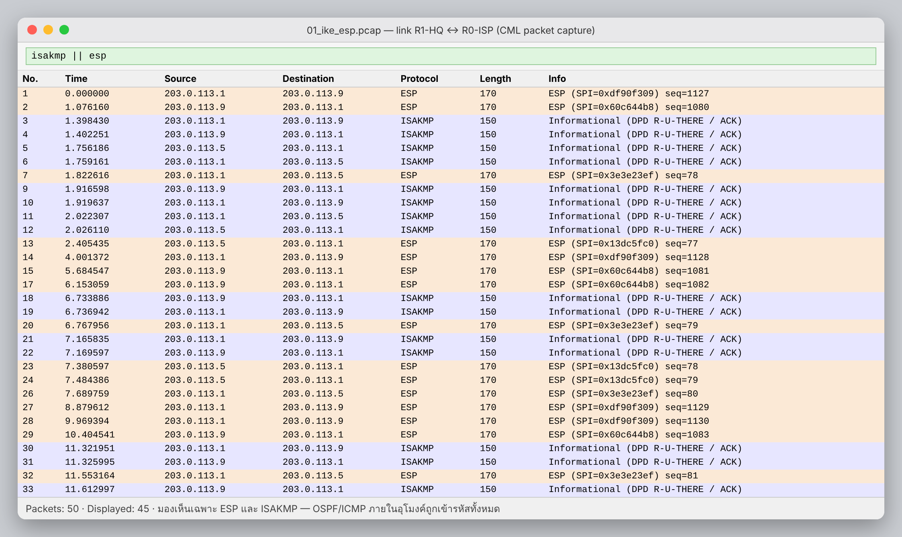
fig-03-wireshark-ike.png
fig-04-wireshark-ssh.pngA5 สคริปต์ Live Demo 15 นาที
| นาที | สิ่งที่ทำ | คำสั่ง / สิ่งที่พูด |
|---|---|---|
| 0:00–1:30 | เปิดเรื่อง + topology | Hub-and-Spoke และเหตุผลที่แยก OOB และ dual-stack · โชว์ CML ว่ารัน IOSv จริง (show version) และ lab นี้สร้างจาก cml_lab.py build |
| 1:30–3:00 | Lab 28.1.3 | lab_28_1_3.py ชี้ ConnectHandler, send_command, send_config_set |
| 3:00–5:00 | Automation pipeline | โชว์ inventory.yaml และ site.j2 → deploy.py --dry-run → deploy.py R2-BR1 (สด 1 เครื่อง ส่วนที่เหลือ deploy ไว้ก่อนแล้ว) |
| 5:00–7:00 | Verification | verify.py ได้ FAIL 0 + CLI show ip ospf neighbor, show crypto ipsec sa |
| 7:00–11:30 | Live Fault #1 (PSK) | fault.py inject psk → ให้กรรมการดูอาการ → ไล่แก้มือบน CLI: show crypto isakmp sa (MM_KEY_EXCH) → show logging | i CRYPTO|PARSER → เจอว่ามีคนเปลี่ยน key → แก้ → clear crypto session → verify |
| 11:30–13:30 | Fault #2 (mgmt-acl) | inject แล้ว SSH เข้าไม่ได้ จึงกู้ผ่าน Console server ของ CML (OOB) ด้วย fault.py recover mgmt-acl → อธิบายเรื่อง access-class |
| 13:30–15:00 | Trade-off + สรุป | สไลด์ Trade-off Matrix และบทเรียน → เข้าสู่ Q&A |
fault.py recover <x> --rollback หรือ Stop/Start node นั้นใน CML (golden config ถูก save ลง NVRAM แล้ว) (4) ถ้าจองไม่ได้ในวันเดโม ให้ใช้ไฟล์ evidence/, .pcap และวิดีโอที่อัดไว้ นำเสนอแทนA6 ปัญหาที่พบบ่อยและวิธีแก้
| อาการ | สาเหตุ / วิธีแก้ |
|---|---|
cml_lab.py แจ้ง version mismatch | ติดตั้ง virl2-client ให้เลขรุ่นหลักตรงกับ CML เช่น pip install "virl2-client==2.8.*" |
| ping .181–.184 ไม่ได้ | node ยัง boot ไม่เสร็จ (ดู cml_lab.py status), External Connector ไม่ได้ตั้งเป็น bridge0 หรือ IP ชนกับเครื่องอื่นใน sandbox (เปลี่ยนเลขใน inventory) |
| ping ได้แต่ SSH ไม่ได้ | ยังไม่มี RSA key ให้รัน cml_lab.py ssh-key |
Authentication failed หลายครั้งติดกัน | โดน login block-for 120 (quiet mode) ให้รอ 2 นาที หรือเข้า console แล้วสั่ง show login |
| IKE ไม่ขึ้นตั้งแต่แรก | ดูตัวนับใน show ip access-lists ACL-WAN-IN ว่ามี match ที่ isakmp ไหม และ PSK/peer IP ตรงกันหรือไม่ |
% Invalid input ที่บรรทัด police/flow | image บางรุ่นใช้ syntax ต่างกัน ให้แก้ใน site.j2 แล้ว deploy ใหม่ (สคริปต์รันซ้ำได้โดยไม่เสียหาย) |
| Collector ไม่ได้รับ syslog | ต้องรันบน devbox (10.10.20.50) ด้วย sudo และ firewall ของ devbox ต้องเปิด UDP 514/2055 |
| NTP verify ได้ WARN | ปกติ ต้องรอ sync 2–5 นาที ดูได้ที่ show ntp associations |
Technical Report
B1 บทสรุปผู้บริหาร
โปรเจคนี้ยกระดับใบงาน 28.1.3 จากการใช้ Netmiko ตั้งค่า router ตัวเดียว ไปเป็นระบบ Network-as-Code ที่ deploy เครือข่ายองค์กร 3 site บน Cisco IOSv ได้ทั้งหมดจากไฟล์ inventory ไฟล์เดียว โดย config ของ router ทุกตัวมาจาก template เดียวกัน ทำให้ไม่มีความคลาดเคลื่อนจากการพิมพ์มือ ระบบตรวจความถูกต้อง 62 รายการได้ภายในไม่ถึงหนึ่งนาที และจำลองความล้มเหลวได้ซ้ำ 4 แบบ พร้อมเก็บหลักฐานสำหรับ RCA อัตโนมัติ
| ตัวชี้วัด | ผล | หมายเหตุ |
|---|---|---|
| จำนวนบรรทัด config ที่สร้างจาก template | 675 | 4 router จาก inventory 74 บรรทัด |
| เวลา deploy ทั้ง 4 router (parallel) | [__] วินาที | ใส่ค่าจริงจากการรัน |
| จำนวน verification checks | 62 | ISP 4 + Hub 20 + Spoke 19×2 |
| MTTR เฉลี่ยของ 4 fault | [__] วินาที | เวลาระหว่าง INJECT กับ POST-RECOVERY ใน timeline.md |
B2 การออกแบบ
B2.1 Topology
- Hub-and-Spoke: HQ เป็น hub ส่วน Branch และ DC เป็น spoke สอดคล้องกับองค์กรจริงที่ทราฟฟิกส่วนใหญ่วิ่งเข้าสู่ HQ/DC
- Underlay กับ Overlay แยกกัน: R0-ISP รู้จักแค่ /30 ของ WAN ไม่รู้เส้นทางภายในองค์กร ทราฟฟิกภายในจึงต้องผ่านอุโมงค์ที่เข้ารหัสเท่านั้น
- OOB Management: Gi0/3 ทุกตัวต่อเข้าวง 10.10.20.0/24 ของ sandbox ผ่าน External Connector และไม่ประกาศใน OSPF ทำให้ automation ยังเข้าถึงอุปกรณ์ได้แม้ Data plane ล่ม และยังมี Console server ของ CML เป็นช่องทางสุดท้าย (พิสูจน์ใน INC-03)
B2.2 แผนแอดเดรส
| Block | IPv4 | IPv6 | เหตุผล |
|---|---|---|---|
| WAN (จำลอง Internet) | 203.0.113.0/24 → /30 | 2001:db8:ffff:N::/64 | ใช้ TEST-NET-3 (RFC 5737) และ prefix สำหรับเอกสาร (RFC 3849) จึงไม่ชนกับ IP จริง |
| LAN | 10.<site>.<vlan>.0/24 | 2001:db8:<site>:<vlan>::/64 | เลข site/VLAN ตรงกันทั้ง v4 และ v6 อ่านแล้วรู้ทันทีว่าอยู่ที่ไหน |
| Tunnel | 172.16.<คู่>.0/30 | 2001:db8:<คู่>::/64 | เลขคู่ 12 = R1↔R2 และ 13 = R1↔R3 ตรงกับเลข Tunnel interface |
| Loopback | 10.0.0.N/32 | 2001:db8:0:N::1/128 | ใช้เป็น source ของ ping/verify และ Router-ID = N.N.N.N |
| Management | 10.10.20.181–184/24 | – | วงของ sandbox (bridge0) อยู่นอก OSPF จึงไม่ถูกกระทบจากปัญหาของ routing |
B2.3 ความปลอดภัยรายระนาบ (Plane)
| Plane | มาตรการ |
|---|---|
| Management | AAA local, SSHv2 only, ACL-MGMT-SSH บน VTY, login block-for, SNMPv3 authPriv (SHA/AES-128) + ACL, NTP แบบมี authentication, Syslog + archive log config (บันทึกว่าใครแก้อะไรเมื่อไร), banner |
| Control | CoPP แยก class Routing / IPsec / Mgmt / ICMP / default, OSPF passive-interface default, ไม่รัน OSPF บน WAN |
| Data | IPsec AES-256 + SHA-256 + DH14 + PFS, ACL-WAN-IN รับเฉพาะ IKE/ESP จาก peer ที่รู้จัก, Flexible NetFlow เพื่อดู traffic |
B2.4 สถาปัตยกรรม Automation
| หลักการ | การนำไปใช้ |
|---|---|
| Single source of truth | inventory.yaml เป็นที่เดียวที่เก็บค่าต่างๆ ส่วน template ไม่มี IP ฝังอยู่เลย |
| Fail fast | StrictUndefined และ --dry-run ตรวจจับข้อผิดพลาดก่อนแตะอุปกรณ์ |
| Safe change | backup ก่อนและหลัง, diff, ตรวจ % Invalid, และมี golden config ไว้ rollback |
| Observability | session log ทุกครั้ง (logs/), รายงาน verify เป็น Markdown/JSON, timeline ของ fault |
| Concurrency | ThreadPoolExecutor สั่งงานทุก router พร้อมกัน |
| Secrets | credential override ด้วย environment variable ได้ |
B3 Real IOS Configuration & Verification
B3.1 ส่วนสำคัญของ config (R1-HQ, render จาก site.j2)
crypto isakmp policy 10 encryption aes 256 / hash sha256 / authentication pre-share / group 14 crypto ipsec transform-set TS-AES256-SHA256 esp-aes 256 esp-sha256-hmac mode transport ! GRE มี outer header อยู่แล้ว จึงประหยัดได้ 20 byte crypto ipsec profile IPSEC-PROFILE set transform-set TS-AES256-SHA256 / set pfs group14 interface Tunnel12 ip address 172.16.12.1 255.255.255.252 / ipv6 address 2001:db8:12::1/64 ip mtu 1400 / ip tcp adjust-mss 1360 ! เผื่อ GRE 24 + ESP overhead ไว้ ip ospf network point-to-point / hello 5 / dead 20 ipv6 ospf 1 area 0 tunnel source GigabitEthernet0/0 / tunnel destination 203.0.113.5 tunnel protection ipsec profile IPSEC-PROFILE router ospf 1 router-id 1.1.1.1 / passive-interface default / no passive-interface Tunnel12, Tunnel13 policy-map PM-COPP (Routing: ไม่ drop · IPsec 128k · Mgmt 512k · ICMP 32k · default 64k) control-plane / service-policy input PM-COPP
config ฉบับเต็มของทุกเครื่องอยู่ที่ configs/running/ และฉบับก่อน deploy อยู่ที่ configs/rendered/
B3.2 Verification Matrix (verify.py)
| Plane | Check | คำสั่ง IOS | เกณฑ์ผ่าน |
|---|---|---|---|
| Control | OSPFv2 adjacency | show ip ospf neighbor | FULL = expected (Hub 2, Spoke 1) |
| OSPFv3 adjacency | show ipv6 ospf neighbor | FULL = expected | |
| IKE Phase 1 | show crypto isakmp sa | QM_IDLE ≥ จำนวน tunnel | |
| CoPP | show policy-map control-plane | มี PM-COPP | |
| Data | Interface | show ip interface brief | WAN/LAN/Tunnel up/up |
| ESP | show crypto ipsec sa | #pkts encaps > 0 | |
| IPv4 reachability | ping <Lo0> source Lo0 | ≥ 80% | |
| IPv6 reachability | ping ipv6 <Lo0> source Lo0 | ≥ 80% | |
| Mgmt | NTP | show ntp status | synchronized |
| NetFlow | show flow monitor / exporter | Allocated, ส่งไปยัง collector | |
| Syslog | show logging | มี host 10.10.20.50 (devbox) | |
| SNMPv3 | show snmp user | มี user และ AES128 | |
| SSH / ACL | show ip ssh / access-lists | v2.0 และ ACL-WAN-IN มี match |
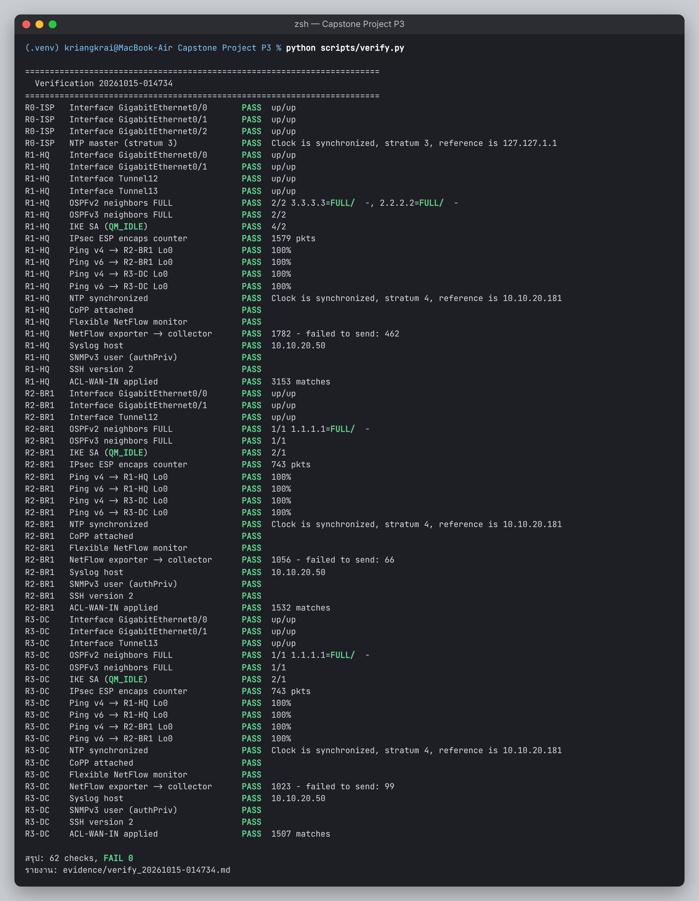
fig-05-verify.png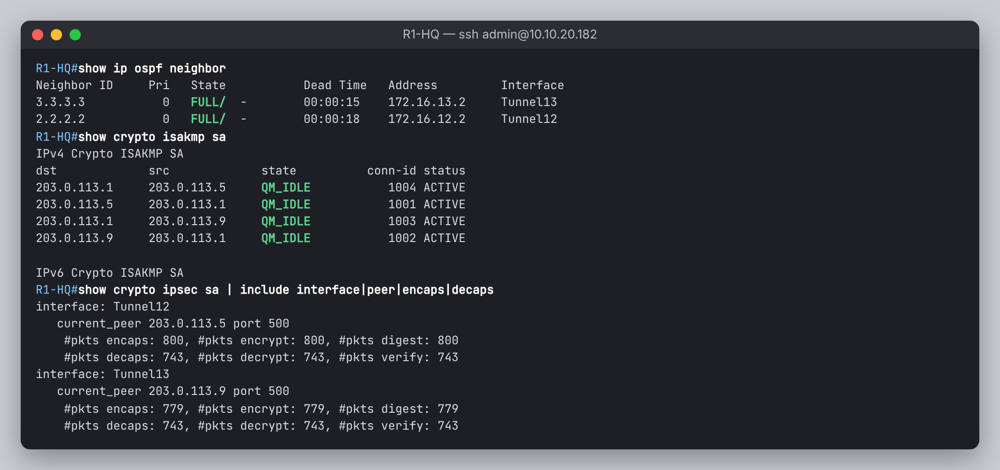
fig-06-ospf-ipsec.png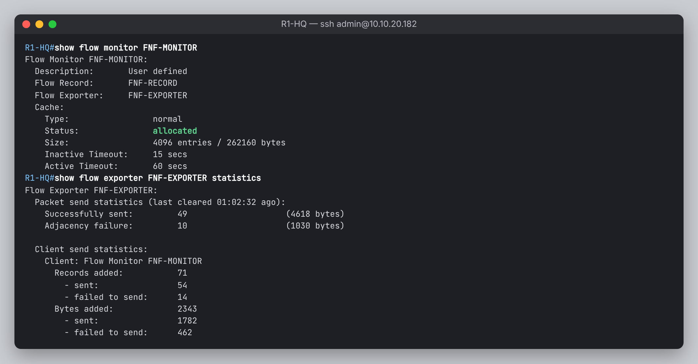
fig-07-netflow.png
fig-08-collector.pngB4 Fault Injection & Root Cause Analysis
ทุกเหตุการณ์รันด้วย fault.py run <scenario> และเก็บหลักฐานไว้ใน evidence/fault_*/timeline.md โดยตัวอย่าง log ในหัวข้อนี้คือรูปแบบข้อความของ IOS ที่คาดว่าจะเห็น ให้แทนที่ด้วยผลจริงจาก timeline ก่อนส่ง และกรอกเวลาจริงในช่อง [__]
| ID | เหตุการณ์ | ระดับ | ผลกระทบ | ตรวจพบโดย | วิธีกู้ |
|---|---|---|---|---|---|
| INC-01 | IPsec PSK mismatch | High | BR1 ขาดจากองค์กร | verify: IKE, OSPF FAIL | แก้ key + clear session |
| INC-02 | OSPF MTU mismatch | High | route ของ BR1 ไม่เข้า RIB | verify: OSPF FAIL | แก้ ip mtu ให้ตรงกัน |
| INC-03 | Management ACL lockout | Medium | จัดการ R3 ผ่าน SSH ไม่ได้ แต่ data plane ปกติ | verify: SSH connect FAIL | กู้ผ่าน console (OOB) |
| INC-04 | WAN link flapping | High | BR1 หลุดเป็นช่วงๆ | Syslog: LINK/OSPF | ทำให้ link เสถียร + ป้องกันด้วย dampening/BFD |
INC-01 · IPsec Pre-Shared Key ไม่ตรงกัน (R2-BR1 ↔ R1-HQ)
- Inject
fault.py inject psk: บน R2 เปลี่ยนcrypto isakmp keyที่ใช้กับ 203.0.113.1 เป็นWRONG-KEY-2569แล้วclear crypto session- Timeline
- Inject [__:__:__] → OSPF Down [__:__:__] (ภายใน dead 20 วินาที) → ตรวจพบ [__:__:__] → กู้คืน [__:__:__] → FULL [__:__:__]
อาการ
R2-BR1# show crypto isakmp sa dst src state conn-id status 203.0.113.1 203.0.113.5 MM_KEY_EXCH 0 ACTIVE R1-HQ# %CRYPTO-4-IKMP_BAD_MESSAGE: IKE message from 203.0.113.5 failed its sanity check or is malformed R1-HQ# %OSPF-5-ADJCHG: Process 1, Nbr 2.2.2.2 on Tunnel12 from FULL to DOWN, Neighbor Down: Dead timer expired R2-BR1# %PARSER-5-CFGLOG_LOGGEDCMD: User:admin logged command:crypto isakmp key ***** address 203.0.113.1
การวินิจฉัย (Top-down ตาม layer ของ overlay)
show ip ospf neighborบน R1 พบว่าไม่มี 2.2.2.2 → ปัญหาอยู่ที่ Tunnel12 หรือต่ำกว่านั้นshow interface Tunnel12ได้ up/up → GRE ไม่ใช่สาเหตุ เพราะ tunnel interface ขึ้นได้แม้ IPsec ไม่ทำงานping 203.0.113.5 source Gi0/0สำเร็จ → underlay ปกติshow crypto isakmp saค้างที่ MM_KEY_EXCH → Phase 1 ล้มเหลวที่ขั้น MM5/MM6 ซึ่งเป็นจุดแรกที่ใช้ key ที่สร้างจาก PSK- Wireshark (capture #3) พบว่า MM5 ถูกส่งซ้ำและไม่มี MM6 ตอบกลับ;
show logging | i PARSERพบว่ามีการแก้crypto isakmp keyไม่นานก่อนเกิดเหตุ
Root Cause (5-Whys)
BR1 ขาดการเชื่อมต่อ ← OSPF บน Tunnel12 down ← ไม่มี IPsec SA จึงไม่มีทราฟฟิกผ่านอุโมงค์ ← IKE Phase 1 ยืนยันตัวตนไม่ผ่าน ← PSK บน R2 ไม่ตรงกับ R1 ← มีการแก้ config ด้วยมือนอก pipeline โดยไม่ผ่านการ verify
การแก้ไขและพิสูจน์
R2-BR1(config)# no crypto isakmp key WRONG-KEY-2569 address 203.0.113.1 R2-BR1(config)# crypto isakmp key <PSK> address 203.0.113.1 R2-BR1# clear crypto session R2-BR1# show crypto isakmp sa → QM_IDLE ; verify.py --quick → FAIL 0
การป้องกัน: แก้ config ผ่าน deploy.py เท่านั้น, ตั้ง alert ใน syslog สำหรับ CFGLOG_LOGGEDCMD ที่มีคำว่า crypto, ระยะยาวเปลี่ยนไปใช้ IKEv2 + certificate (PKI) แทน PSK
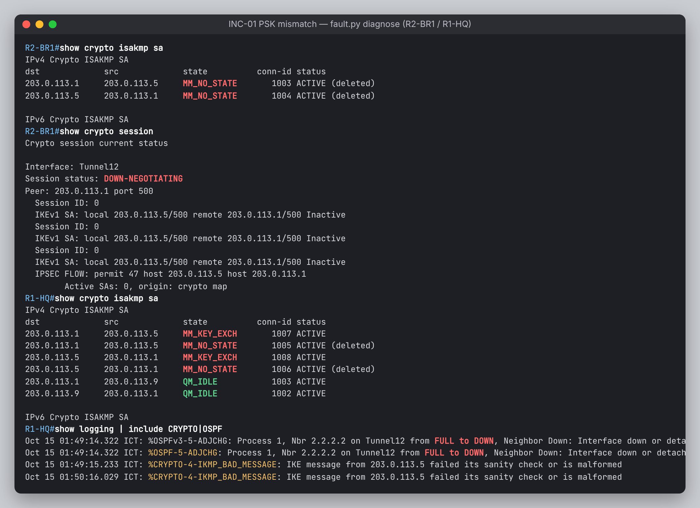
fig-09-inc01-symptom.png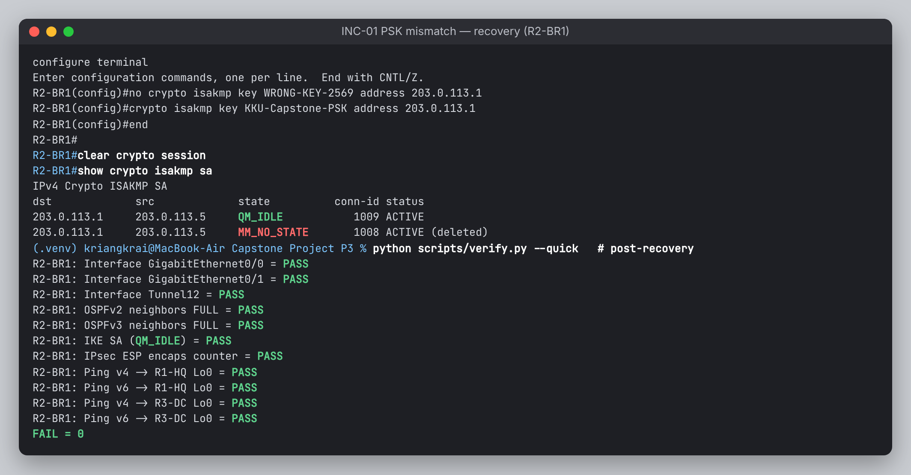
fig-10-inc01-fixed.pngINC-02 · OSPF MTU Mismatch บน Tunnel12
- Inject
fault.py inject mtu: บน R2 ตั้งip mtu 1300ที่ Tunnel12 (R1 ใช้ 1400) แล้ว shut/no shut เพื่อให้ adjacency เริ่มต้นใหม่ พร้อมเปิดdebug ip ospf adj- Timeline
- Inject [__:__:__] → ค้าง EXSTART [__:__:__] → ตรวจพบ [__:__:__] → แก้ [__:__:__] → FULL [__:__:__]
อาการ
R2-BR1# show ip ospf neighbor Neighbor ID Pri State Dead Time Address Interface 1.1.1.1 0 EXSTART/ - 00:00:17 172.16.12.1 Tunnel12 R2-BR1# OSPF-1 ADJ Tu12: Nbr 1.1.1.1 has larger interface MTU R1-HQ# %OSPF-5-ADJCHG: Process 1, Nbr 2.2.2.2 on Tunnel12 from EXSTART to DOWN, Neighbor Down: Too many retransmissions
การวินิจฉัย
- neighbor มีอยู่แต่ไม่ถึง FULL แปลว่า Hello ผ่านแล้ว (ค่า area, timer, auth ตรงกัน) ปัญหาจึงอยู่ที่ขั้นแลก Database Description
- สถานะที่ค้างใน EXSTART/EXCHANGE มีสาเหตุหลักคือ MTU mismatch และ router-id ซ้ำ ตรวจ router-id ด้วย
show ip protocolsแล้วไม่ซ้ำ show ip interface Tunnel12 | i MTUทั้งสองฝั่งได้ 1300 กับ 1400 ซึ่งยืนยันได้จาก debug
Root Cause
OSPF ใส่ค่า Interface MTU ไว้ใน DBD packet (RFC 2328 §10.6) ผู้รับจะทิ้ง DBD ที่ระบุ MTU มากกว่า MTU ของตัวเอง R2 (1300) จึงไม่รับ DBD จาก R1 (1400) ทำให้ adjacency วนอยู่ใน EXSTART/EXCHANGE แม้ Hello จะผ่าน สาเหตุต้นทางคือค่า ip mtu สองฝั่งของลิงก์เดียวกันไม่ตรงกัน
การแก้ไข
R2-BR1(config)# interface Tunnel12
R2-BR1(config-if)# ip mtu 1400 → neighbor FULL ภายในไม่กี่วินาที
ทางเลือกที่ไม่แนะนำ: ip ospf mtu-ignore ทำให้ adjacency ขึ้นได้ แต่ซ่อนปัญหาไว้ แพ็กเก็ตขนาดใหญ่จะยังถูก fragment หรือ drop เหมือนเดิม การป้องกัน: กำหนด MTU ใน template เป็นค่ากลางค่าเดียว และ verify.py ตรวจว่า MTU ของ tunnel ทั้งสองฝั่งเท่ากัน
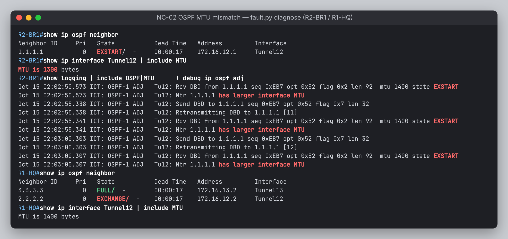
fig-11-inc02-symptom.png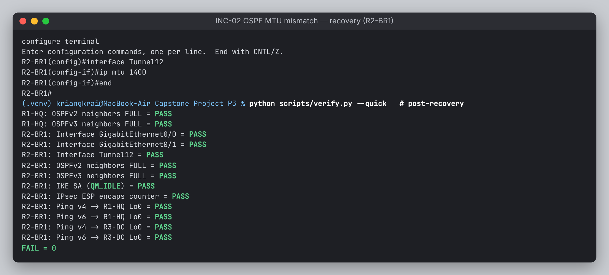
fig-12-inc02-fixed.pngINC-03 · ACL บน VTY drop ทราฟฟิก Management (R3-DC)
- Inject
fault.py inject mgmt-acl: ผูกACL-VTY-LOCKOUT(permit เฉพาะ 10.10.20.181 ซึ่งเป็น R0 ไม่ใช่ devbox) กับline vty 0 4แทน ACL-MGMT-SSH- Timeline
- Inject [__:__:__] → SSH ล้มเหลว [__:__:__] → เข้า console [__:__:__] → กู้คืน [__:__:__]
automation$ verify.py R3-DC → SSH connect FAIL (TCP connection to device failed / refused) R3-DC# %SEC-6-IPACCESSLOGS: list ACL-VTY-LOCKOUT denied 10.10.20.50 1 packet R1-HQ# show ip ospf neighbor → 3.3.3.3 FULL (data plane ไม่กระทบ)
Root Cause: access-class บน VTY อนุญาตเฉพาะ host 10.10.20.181 ซึ่งไม่ใช่ automation host (devbox 10.10.20.50) จึงตัดช่องทางจัดการผ่าน SSH ทั้งหมด บทเรียน: ต้องมีช่องทาง Out-of-Band เสมอ งานนี้กู้ผ่าน Console server ของ CML ด้วย fault.py recover mgmt-acl ซึ่ง Netmiko SSH เข้า CML ด้วย terminal_server แล้ว open /Capstone-P3/R3-DC/0 และ redispatch เป็น cisco_ios เหมือน console server ในองค์กรจริง การป้องกัน: ใช้ reload in 5 ก่อนแก้ ACL ด้านการจัดการ (หรือ configure terminal revert timer) และให้ deploy.py ตรวจว่า SSH กลับเข้าได้ก่อน commit
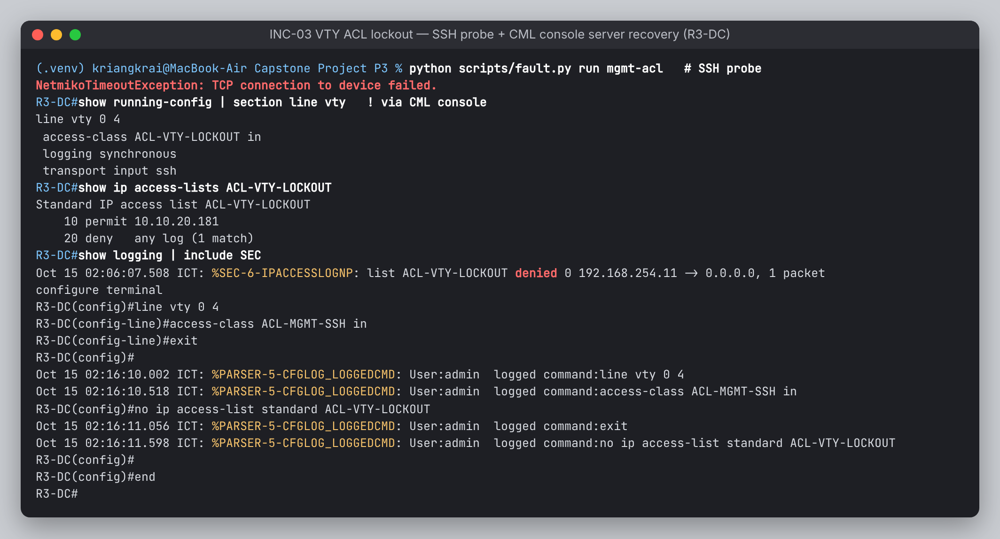
fig-13-inc03.pngINC-04 · Link Flapping บน WAN ของ R2-BR1
- Inject
fault.py inject flap: shut/no shut Gi0/0 สลับกัน 3 รอบ (down 8 วินาที / up 12 วินาที) หรือแบบสมจริงกว่าคือcml_lab.py flap --a R2-BR1 --b R0-ISPที่ตัดและต่อ “สาย” ผ่าน CML API ทำให้ IOS เห็นเป็น carrier loss จริงๆ
R2-BR1# %LINEPROTO-5-UPDOWN: Line protocol on Interface Tunnel12, changed state to down R2-BR1# %OSPF-5-ADJCHG: Process 1, Nbr 1.1.1.1 on Tunnel12 from FULL to DOWN, Neighbor Down: Interface down or detached R1-HQ# show ip route ospf → 10.2.10.0/24 หาย / กลับมา ซ้ำตามรอบ flap
Root Cause: WAN ของ BR1 ไม่เสถียร ทุกครั้งที่ link down จะทำให้ tunnel down → OSPF down → IKE ต้องเจรจาใหม่ เกิด churn ทั้ง control plane (ถ้าจำลองด้วย shutdown จะเห็นเป็น administratively down ส่วนถ้าใช้ cml_lab.py flap จะเห็นเป็น down เหมือนสายหลุดจริง) การแก้: ทำให้ link กลับมาเสถียร การป้องกัน: dampening บน interface เพื่อกด interface ที่ flap บ่อย, BFD หรือ timer ที่เหมาะสม, และมี tunnel สำรองผ่าน ISP ที่สอง
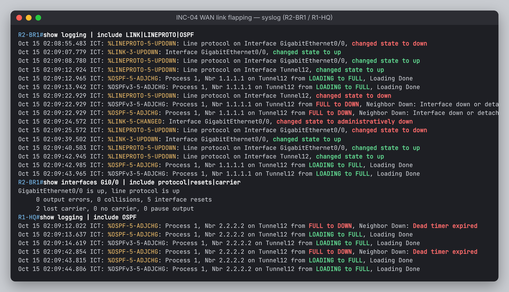
fig-14-inc04.pngเปรียบเทียบวิธีกู้คืน
| วิธี | ข้อดี | ข้อเสีย | ใช้เมื่อ |
|---|---|---|---|
| Targeted fix | แก้ตรงจุด กระทบน้อย | ต้องรู้ root cause ก่อน | วินิจฉัยได้ชัดเจนแล้ว |
configure replace golden.cfg | กลับสู่สถานะที่ตรวจแล้วว่าดี ลบ drift ทั้งหมด | ลบการเปลี่ยนแปลงที่ตั้งใจทำแต่ยังไม่ได้เก็บเป็น golden | หาสาเหตุไม่พบ หรือมีการแก้หลายจุด |
| Console OOB | ใช้ได้แม้ in-band ล่มหมด | ช้า และต้องเข้าถึงทางกายภาพหรือ console server | ถูกล็อก SSH หรือ mgmt IP หาย |
B5 Comparative Analysis & Trade-off Matrix
ให้คะแนนแต่ละเกณฑ์ 1–5 คูณน้ำหนัก (รวม 100%) แล้วเทียบคะแนนถ่วงน้ำหนัก (เต็ม 5.00)
T1 · เครื่องมือ Automation
| เกณฑ์ (น้ำหนัก) | Netmiko | NAPALM | Ansible (cisco.ios) | NETCONF / RESTCONF |
|---|---|---|---|---|
| เรียนรู้ง่ายและต่อยอดใบงาน 28.1.3 ได้ (20%) | 5 | 3 | 3 | 2 |
| ควบคุมได้ละเอียด: custom logic, prompt, fault injection (25%) | 5 | 3 | 3 | 4 |
| Idempotency / declarative (20%) | 2 | 4 | 5 | 5 |
| Multi-vendor abstraction (10%) | 3 | 5 | 4 | 4 |
| ใช้กับ IOSv (IOS classic) ได้ทันที (25%) | 5 | 4 | 5 | 1 |
| คะแนนถ่วงน้ำหนัก | 4.20 | 3.65 | 4.00 | 3.05 |
ข้อสรุป: Netmiko เหมาะกับงานนี้ที่สุด เพราะต้องควบคุมลำดับคำสั่งแบบ imperative เพื่อฉีดและกู้ปัญหา และ IOS classic ไม่มี YANG model ส่วนจุดอ่อนเรื่อง idempotency ชดเชยด้วย diff, verify และ golden config ถ้าใช้ใน production ควรใช้ Ansible คุม workflow แล้วเรียกใช้ Netmiko ในงานเฉพาะทาง หรือย้ายไป IOS-XE เพื่อใช้ RESTCONF
T2 · เทคโนโลยี VPN Overlay
| เกณฑ์ (น้ำหนัก) | GRE over IPsec (P2P) | DMVPN Phase 3 | IPsec SVTI | Crypto map |
|---|---|---|---|---|
| ความปลอดภัย (25%) | 5 | 5 | 5 | 4 |
| ขยายจำนวน spoke (20%) | 2 | 5 | 2 | 2 |
| รองรับ multicast/IGP และ dual-stack ใน tunnel เดียว (20%) | 5 | 4 | 4 | 1 |
| ความง่ายของ config (15%) | 4 | 2 | 5 | 3 |
| Troubleshoot ง่าย / เห็นภาพการทำงาน (20%) | 5 | 3 | 4 | 3 |
| คะแนนถ่วงน้ำหนัก | 4.25 | 3.95 | 4.00 | 2.65 |
ข้อสรุป: มี 3 site การใช้ P2P GRE/IPsec จึงคุ้มที่สุด เพราะ GRE ส่งได้ทั้ง IPv4 และ IPv6 รวมถึง OSPF multicast ใน tunnel เดียว แต่ถ้ามี branch เกิน 10 แห่งควรเปลี่ยนเป็น DMVPN Phase 3 เพราะจำนวน tunnel แบบ P2P จะโตแบบ O(n) ที่ hub และไม่มี spoke-to-spoke โดยตรง
T3 · Routing Protocol บน Overlay
| เกณฑ์ (น้ำหนัก) | OSPFv2 + OSPFv3 | EIGRP (named) | BGP |
|---|---|---|---|
| มาตรฐานเปิด / multi-vendor (20%) | 5 | 3 | 5 |
| ความเร็ว convergence (20%) | 4 | 5 | 2 |
| Dual-stack (20%) | 4 | 5 | 5 |
| ความง่ายของ config (15%) | 3 | 4 | 2 |
| Scalability / policy control (25%) | 4 | 3 | 5 |
| คะแนนถ่วงน้ำหนัก | 4.05 | 3.95 | 3.95 |
ข้อสรุป: คะแนนสูสีกัน แต่เลือก OSPF เพราะเป็นมาตรฐานเปิดและอยู่ในหลักสูตร CCNA ส่วน BGP เหมาะเมื่อต้องการ policy ระหว่างองค์กร หรือเชื่อมกับ ISP หลายราย
T4 · แพลตฟอร์มจำลอง
| เกณฑ์ (น้ำหนัก) | Packet Tracer | GNS3 (cloud VM) | CML (DevNet Sandbox) | EVE-NG CE |
|---|---|---|---|---|
| ความสมจริงของ IOS (25%) | 1 | 5 | 5 | 5 |
| Wireshark / packet capture (10%) | 1 | 5 | 4 | 4 |
| Automation / API ของแพลตฟอร์ม (20%) | 2 | 4 | 5 | 3 |
| ใช้กับ Mac Apple Silicon ได้ + เวลาติดตั้ง (25%) | 5 | 3 | 4 | 2 |
| ต้นทุน + อาจารย์รับรูปแบบไฟล์ (20%) | 4 | 3 | 5 | 3 |
| คะแนนถ่วงน้ำหนัก | 2.80 | 3.90 | 4.65 | 3.35 |
ข้อสรุป: CML ของ DevNet Sandbox ได้คะแนนสูงสุด เพราะรัน Real IOSv บน x86 ของ Cisco ได้ฟรี ไม่ต้องติดตั้งอะไรบน Mac และมี REST API ที่ทำให้การสร้าง topology, capture และจำลองสายหลุดเป็นโค้ดได้ทั้งหมด จุดอ่อนคือเวลาจองมีจำกัด (ได้ 4 ในเกณฑ์การเข้าถึง) ซึ่งลดความเสี่ยงได้ด้วยการจองล่วงหน้า บันทึกหลักฐานเป็นไฟล์ และอัดวิดีโอสำรอง ส่วน GNS3 เป็นทางเลือกที่ดีถ้ามีเครื่อง x86 ของตัวเอง และ Packet Tracer รันคำสั่งอย่าง flow, control-plane และ Netmiko over SSH ไม่ได้ จึงใช้เพียงวาด draft
B6 บทเรียนและงานต่อยอด
- การมี OOB management และ golden config ทำให้กล้ากดรัน fault injection เพราะรู้ว่ากู้คืนได้เสมอ
- อาการเดียวกัน (OSPF down) มีได้หลายสาเหตุ (PSK, MTU, link) การไล่ตรวจตาม layer และใช้ข้อมูลจากหลายแหล่ง (show, syslog, debug, pcap) ช่วยให้ระบุสาเหตุได้เร็ว
- ข้อจำกัด: Netmiko เป็น imperative จึงต้องเขียนตัวตรวจ diff และ verify เอง, credential ยังเป็น local user, PSK ยังไม่ใช่ PKI
- งานต่อยอด: CI pipeline (GitHub Actions) ที่รัน
--dry-runและ lint config ทุก commit, TACACS+/RADIUS, IKEv2 + certificate, DMVPN, ทำ dashboard จาก NetFlow, ย้ายไปใช้ IOS-XE และ RESTCONF
ภาคผนวก ก · เตรียมตอบ Technical Q&A
| คำถามที่คาดว่าจะถูกถาม | แนวคำตอบ |
|---|---|
| ทำไมไม่รัน OSPF บน WAN ด้วย | ถ้า router เรียนรู้ tunnel destination ผ่าน tunnel เองจะเกิด recursive routing (%TUN-5-RECURDOWN) ทำให้ tunnel ล่มวนซ้ำ จึงใช้ static default route ผ่าน ISP สำหรับ underlay |
| ทำไม ip mtu 1400 และ adjust-mss 1360 | 1500 − GRE 24 − ESP transport overhead (SPI/Seq/IV/pad/ICV ประมาณ 40–60 byte) ≈ 1416 จึงปัดลงเป็น 1400 เพื่อเผื่อไว้ ส่วน MSS = 1400 − IP 20 − TCP 20 = 1360 ช่วยกัน fragmentation |
| Transport mode กับ Tunnel mode | GRE สร้าง outer IP header ที่ปลายทางเดียวกันอยู่แล้ว การใช้ transport mode จึงประหยัด IP header ซ้ำได้ 20 byte |
| ทำไม OSPF ค้างที่ EXSTART เมื่อ MTU ไม่ตรงกัน | DBD packet ระบุ interface MTU ไว้ ผู้รับจะปฏิเสธ DBD ที่มี MTU มากกว่าของตัวเอง ทำให้แลก database ไม่สำเร็จ แต่ Hello ไม่ได้ตรวจ MTU จึงยังเห็น neighbor อยู่ |
| รู้ได้อย่างไรว่าเป็น PSK ผิด ไม่ใช่ policy ผิด | ถ้า policy ไม่ตรงกันจะล้มตั้งแต่ MM1/MM2 (MM_NO_STATE และ “atts are not acceptable”) แต่ PSK ผิดจะผ่าน MM1–4 แล้วล้มที่ MM5/6 ซึ่งเป็นจุดแรกที่ถอดรหัสด้วย key จาก PSK จึงเห็น MM_KEY_EXCH และ IKMP_BAD_MESSAGE |
| CoPP class Routing ทำไม exceed-action transmit | ไม่ควร drop routing protocol เพราะจะทำให้ adjacency ล่มเอง จึงใช้ class นี้เพื่อนับและเฝ้าดูเท่านั้น ส่วน ICMP/default จำกัดเข้มเพื่อกัน DoS ไปยัง CPU |
| Netmiko ต่างจาก Paramiko อย่างไร | Netmiko ต่อยอดจาก Paramiko โดยจัดการเรื่อง prompt, paging (terminal length 0), enable/config mode, timing และ TextFSM ให้ตามชนิดอุปกรณ์ |
send_command กับ send_command_timing | แบบแรกรอจนเจอ prompt ตาม pattern ส่วนแบบหลังรอตามเวลา เหมาะกับคำสั่งที่มีคำถามโต้ตอบหรือ prompt เปลี่ยน เช่น clear crypto session |
| Idempotent ไหม ถ้ารัน deploy ซ้ำ | IOS CLI เป็น merge จึงรันซ้ำได้โดยไม่เสียหาย และ diff จะเป็นศูนย์ ยกเว้น snmp-server user ที่ไม่แสดงใน running-config ส่วนการลบ config เก่าต้องใช้ configure replace |
| ทำไม Wireshark บน WAN ไม่เห็น OSPF | OSPF อยู่ใน GRE และถูกห่อด้วย ESP จึงเห็นเพียง ESP ซึ่งเป็นหลักฐานว่าการเข้ารหัสทำงาน |
| SNMPv3 มีระดับความปลอดภัยอะไรบ้าง | noAuthNoPriv / authNoPriv / authPriv งานนี้ใช้ authPriv (SHA + AES-128) และจำกัด manager ด้วย ACL |
| ถ้า branch เพิ่มเป็น 50 แห่งต้องแก้อะไร | เพิ่ม entry ใน inventory ได้ทันที แต่ควรเปลี่ยน overlay เป็น DMVPN Phase 3 และใช้ OSPF area แยกหรือ BGP ตาม T2/T3 |
ภาคผนวก ข · Mapping ใบงาน 28.1.3 → โปรเจค
| ใบงานต้นฉบับ | ในโปรเจคนี้ |
|---|---|
| Part 1: Launch VM, ต่อ SSH ไปที่ CSR1kv | IOSv บน CML (DevNet Sandbox) สร้าง topology + Day-0 อัตโนมัติด้วย cml_lab.py build |
Part 2: ConnectHandler + send_command("show ip interface brief") | lab_28_1_3.py Part 1–2 + TextFSM structured output |
Part 3: send_config_set() สร้าง Loopback | lab_28_1_3.py Part 3 แล้วขยายเป็น deploy.py ที่ push config ทั้งองค์กรจาก template |
| Part 4: ตรวจผลด้วย show | verify.py 62 checks + รายงาน PASS/FAIL |
| (ไม่มีในใบงาน) | cml_lab.py (IaC, capture, link flap), fault.py, collector.py, golden config rollback |
ภาคผนวก ค · Deliverables Checklist
| ✓ | รายการ | ไฟล์/โฟลเดอร์ |
|---|---|---|
| ☐ | CML topology ที่ใช้งานได้จริง (อาจารย์อนุญาตให้ใช้ .yaml) | topology/Capstone-P3.yaml |
| ☐ | running-config ฉบับเต็มทุกอุปกรณ์ | configs/running/*.cfg |
| ☐ | Packet Tracer draft (bare minimum) | topology-draft.pkt |
| ☐ | Wireshark captures | captures/01_ike_esp.pcap … 05_mgmt.pcap |
| ☐ | หลักฐาน verify และ fault timeline | evidence/ |
| ☐ | Source code + templates + inventory | scripts/, templates/, inventory.yaml |
| ☐ | Runbook & Technical Report (PDF) ที่มีภาพหน้าจอจริงครบ 14 รูป | report/Capstone-P3-Runbook-Report.pdf |
| ☐ | สไลด์นำเสนอ | Canva (ลิงก์) |